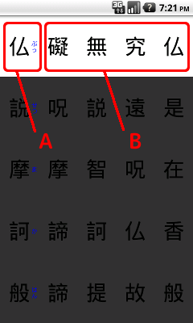
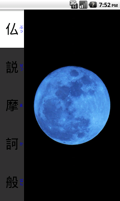
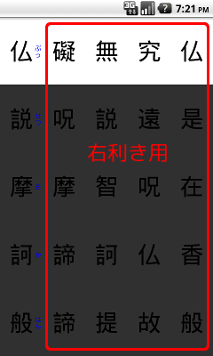
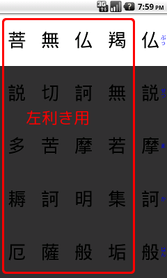
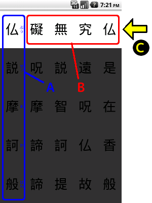
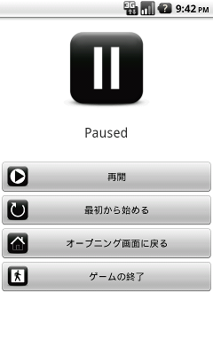
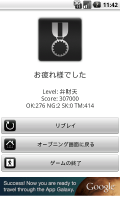

このたびは、４時起きソフトの「よんたく般若心経」をダウンロードいただき、誠にありがとうございます。
このアプリケーションは、般若心経をゲームで遊んでいるうちに覚えてしまおうという目的のもとに開発されました。
ゲームをスタートしますと、画面に般若心経が縦書で表示されます（図1-A）。その横に４つの文字が表示されます（図1-B）。
図1
この４つの文字の中から正しい文字を探してタップしていくゲームです。
般若心経が読み進められるスピードは４段階（遅い・普通・早い・自分のペースで）があり、 設定により調節可能です（インストール直後は自分のペースになっています）
設定画面で以下の項目が調整可能です。お好みにより調整してください。
チェックしますと練習モードになり、ブルームーンの大きなボタンが１つだけ表示されます（図2）。
図2
４つの文字の中から文字を探す必要はなく、単に大きなボタンをタップするだけです。 リズム感をつかむためや、リズムに乗って（あるいは自分のペースで）お経を唱える ときに使用できます。
カーソル（白い背景の部分）が進んでいく速さを設定します。 自分で、遅い、普通、早いの４段階の設定が可能です。 「自分で」を選択した場合は、自動でカーソルは進まず、タップすることでカーソルが進んでいきます。
右（右利き用）にしますと、４つの選択肢が右側に、般若心経（フリガナ付き）が左側に表示されます（図3）。
図3
左（左利き用）にしますと、４つの選択肢が左側に、般若心経（フリガナ付き）が右側に表示されます（図4）
図4
お経を唱えている途中で入るカーンとかチーンとかいう合いの手の音を設定します。いろんな音がありますのでお好みにより調節してください。 もちろん、音を出さなくすることも可能です。
ボタンをタップしたときの音を設定します。いろんな音がありますのでお好みにより調節してください。 もちろん、音を出さなくすることも可能です。
図5
般若心経が表示されます。設定画面のボタン配置が左利き用になっている場合は、右側に表示されます。
ゲーム中にこの部分をタップしますとポーズ（一時停止）します。
４つの文字が表示されます。この中に１つだけ左側に表示されている般若心経と同じ文字がありますので、 探してください。４つのうちのいずれかをタップしますと次の文字に進みます。
白い背景の部分が現在の読み上げ位置です。タップ、または一定時間が経過しますと
自動で次の文字に進みます。一番下まで進みますと上に戻ります。
※設定画面の読み上げる速さが「自分で」の場合は、タップするまで次の文字には進みません。
最初の１文字をタップしますとゲームが開始されます。
般若心経の行（フリガナが振ってある文字、図5-A）をタップしますと一時停止します。（図6）
図6
再開するには、「再開」ボタンをタップするか、Androidの戻るキーを押します。
「最初から始める」を選択しますと、ゲームの最初（１文字目）に戻ります。
「オープニング画面に戻る」を選択しますと、起動直後のオープニング画面に戻ります。
「ゲームの終了」を選択しますと、本アプリケーションを終了します。
般若心経は、全部で２７８文字あります。
最後の２７８文字目まで読み進めていきますとゲーム終了です。（図7）
図7
お疲れ様でしたの下にスコアが表示されます。
Levelには、スコアに応じて代表的な仏様が表示されます。最高ランクの釈迦如来を出された方は、人間を超越したまさに神レベルの方です。
OKは正解の数、NGは間違いの数、SKは一定時間内にタップできずにスキップされた数、TMはかかった時間（秒）を表します。
「リプレイ」を選択しますと、もう一度ゲームを行います。
「オープニング画面に戻る」を選択しますと、起動直後のオープニング画面に戻ります。
「ゲームの終了」を選択しますと、本アプリケーションを終了します。
唱えるタイミングについて
最初は、勝手にカーソルが進んでいくのでどのタイミングで唱えたらいいのか戸惑うかと思います。次の要領で唱えていただくように最適化しております。
(1)白いカーソルの部分の文字を見て、なんと唱えたらいいかを把握します。（この時点ではまだ発声しない)
(2)次に、実際に声に出して発声します。と同時に画面をタップします。（カーソルが次に進みます）
(3)(1)に戻り、繰り返します。
ようは、白くなった瞬間に唱えるのではなく、カーソルが次に移るときに唱えます。
なお、唱えるタイミングは、全国曹洞宗青年会さんの摩訶般若波羅蜜多心経の動画を参考にさせていただきました。
般若心経とは、大乗仏教の心髄が説かれている、ありがたいお経とされています。
が、何回読んでも全く意味がわかりません。
意味が分からないものを、意味もなく唱える、意味って何？
意味が知りたくて、いろんな人のさまざまな解釈を読みましたが、ピンとこない。
その中で、私がなるほどと理解できた動画をリンクしておきます。